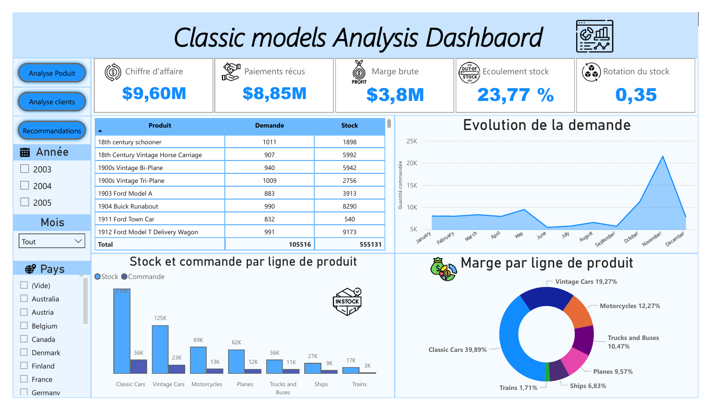
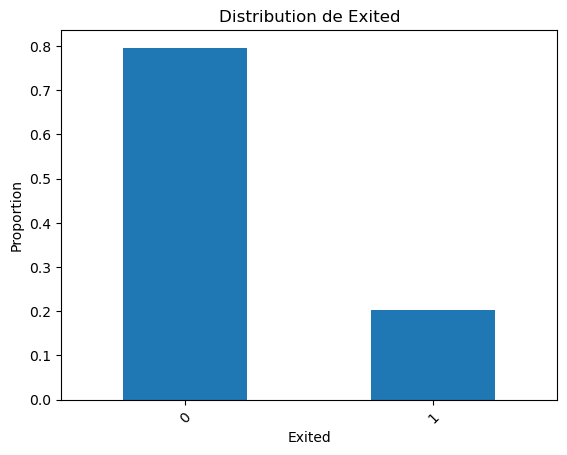
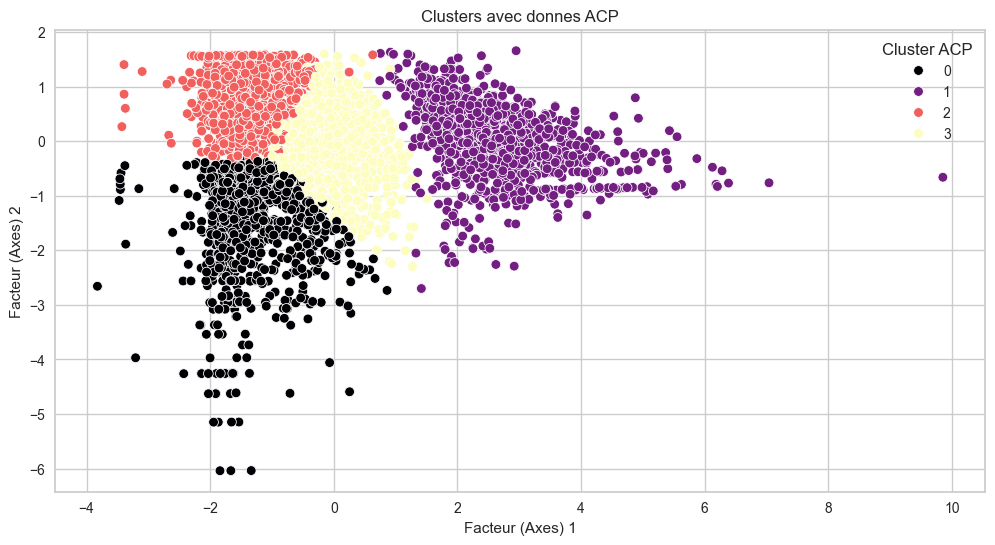

Bienvenue sur mon Portfolio
Expériences Professionnelles
Data Analyst (Stagiaire)
Pôle Acquisition et Commercial (05/2025 - 08/2025)
Aliive, pour une alimentation positive — Neuilly-sur-Seine, France
- Mise en place et suivi de rapports de performance d’acquisition client (Google Ads, Meta Ads).
- Analyse des KPI marketing (CPA, CPC, CPV, taux de recrutement).
- Contribution à la stratégie digitale (campagnes d’influence & SEO).
- Automatisation de reporting : réduction du temps de 4 jours → 2 jours.
Outils : Google Ads, Meta, Excel, SQL
Data Analyst (Stagiaire)
Direction Logistique Pharmaceutique -- Servie Achats (11/2022 - 08/2023)
Nouvelle Pharmacie de la Santé Publique de Côte d’Ivoire (Centrale d'achat nationale) — Abidjan
- Extraction, nettoyage et analyse de données.
- Création, calcule et suivi d’indicateurs clés (prix, stock, disponibilité, délais).
- Conception de dashboards Power BI.
- Automatisation et optimisation des processus achat.
- Documentation hebdomadaires et recommandations stratégiques
Outils : SQL, Power BI, Excel, Access
Projets Data
Classic Models – Analyse commerciale et optimisation des ventes (SQL & Power BI)
Contexte & Objectif : Analyser et optimiser les opérations commerciales d’une entreprise de vente de modèles réduits afin de détecter les tendances clés, comprendre la dynamique des ventes et améliorer la performance des employés.
-
Méthodes : Analyse multidimensionnelle (produits, commandes, clients, employés) via requêtes SQL.
Connexion de la base de données SQL à Power BI pour la modélisation et la création d'un Tableau de bord interactif de suivi des KPIs. -
Résultats Clés & Impact : Ce travail a permis d'identifier rapidement les produits phares et les zones stratégiques, de suivre la performance commerciale ainsi que la dynamique des stocks et la charge de travail des employés.
Le Dashboard Power BI opérationnel fournit aux managers un outil de suivi en temps réel pour des décisions stratégiques rapides.
Outils : SQL, Power BI, Modélisation de données (Schema Star)
Voir le projet détaillé →Prédiction du Churn Bancaire (Python : Scikit-learn)
Contexte & Objectif : Anticiper le départ des clients bancaires (churn) afin de mettre en place des actions de fidélisation ciblées et optimiser les campagnes marketing.
-
Méthodes : Prétraitement des données (encodage, standardisation, gestion du déséquilibre des classes).
Comparaison de modèles (Régression Logistique, Random Forest). Modèle final : Random Forest optimisé avec hyperparamètres ajustés et sur-échantillonnage de la classe churner(minoritaire).
-
Résultats Clés & Impact : Accuracy de 86% ; F1-score sur les clients à risque (churners) de 62%.
Ce modèle permet l'identification des clients les plus à risque, améliorant la rétention client grâce à des actions marketing ciblées.
Outils : Python : Pandas, Matplotlib, Scikit-learn
Voir le projet détaillé →Segmentation Client (Analyse RFM, ACP & Clustering)
Contexte & Objectif : Identifier des groupes de clients distincts pour optimiser les campagnes marketing et améliorer la fidélisation dans un environnement retail.
-
Méthodes : Prétraitement des données. Analyse RFM (Récence, Fréquence, Montant) et ACP (Analyse en Composantes Principales).
Clustering non supervisée par l'algorithme K-Means. -
Résultats Clés & Impact : Définition de 4 segments clients (Inactifs, Actifs de classe moyenne, VIP/Champions, Anciens peu engagés).
Analyse des comportements et recommandations spécifiques pour chaque segment.
Impact : Fournit une base solide pour des stratégies marketing personnalisées, un ciblage précis et des campagnes de fidélisation efficaces.
Outils : Python : Pandas, Matplotlib, Scikit-learn(PCA, KMeans)
Voir le projet détaillé →🌱 Analyse ESG/RSE (R & RStudio)

Objectif : Analyse de données environnementales, sociales et de gouvernance (ESG) pour évaluer la performance RSE d'un panel d'entreprises.
Outils : R, RStudio, Statistiques descriptives
Voir le projet détaillé →🤖 SQL Agent (LangChain + Deepseek-Coder)

Outils : Python, LangChain, Deepseek-Coder
Voir le projet détaillé →Certifications
- Intelligence Artificielle (FORCE-N & Mastercard Foundation) — Université Cheikh Hamidou Kane (mars 2024) (Télécharger le Certificat 📄) 🔒 Authenticité
- Traitement de données (FORCE-N & Mastercard Foundation) — Université Cheikh Hamidou Kane (Août 2024) (Télécharger le Certificat 📄) 🔒 Authenticité